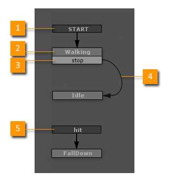
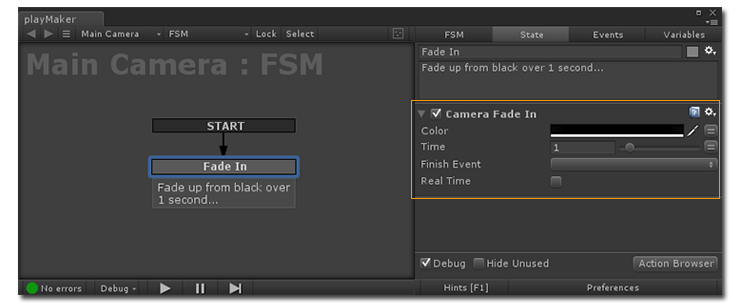

Finite State Machines
A Finite State Machine (FSM) organizes behaviors into discrete states:
On, Off, Open, Closed, Walking, Idle, Attacking, Defending...
Playmaker uses event-driven FSMs to control Unity:

-
Start Event
- A Start Event is sent when the FSM is enabled.
- The start event activates the first state, known as the Start State.
- State
-
Transition Event
- Events trigger transitions to another State.
- Events can be sent by Unity (collisions, triggers, mouse input, animation events...)
- Or by Actions (distance checks, timeouts, game logic...)
-
Transition
- The Active State is "exited" and the new state is "entered."
- The Graph View makes it very easy to build and debug these transitions.
-
Global Transition
- A Global Transition can be triggered at any time, regardless of the currently active state.
- In the example above, the character can be hit and knocked down at any time, so we use a global transition.
- Global transitions can be used to simplify FSMs by reducing the number of explicit transitions you need to define.
- They are similar to the Any State transitions in Mecanim.
Actions

The currently active state executes Actions. Actions have parameters that can be edited in the Action Editor, just like script parameters are edited in the Unity Inspector.
Variables
Variables are named containers for a value. The Action Editor allows you to hook Action parameters up to variables instead of constant values. E.g., "numberOfLives" instead of 3, "health" instead of 100.

If a value needs to change over time you should use a Variable instead of a hard-coded value.
Events
All transitions between states are triggered by Events.
See Also: